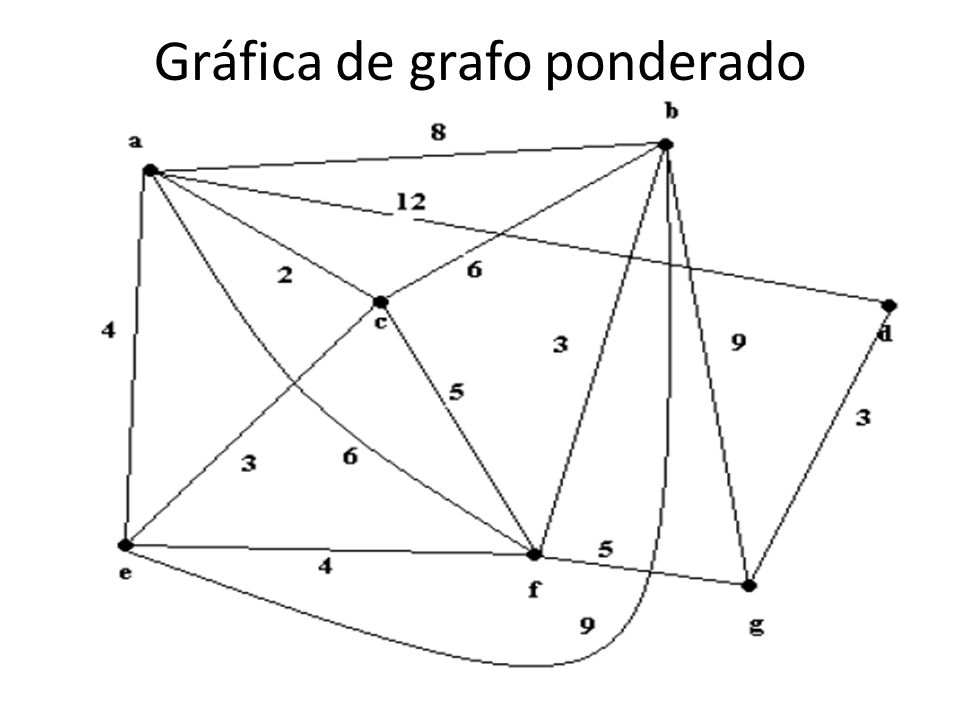
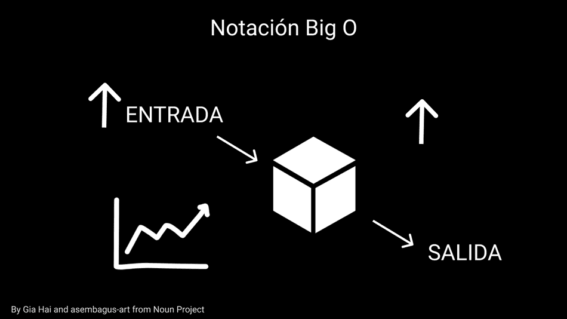

Análisis de Eficiencia de un Algoritmo
El análisis de eficiencia de un algoritmo es crucial para comprender y mejorar el rendimiento
de un programa. Se centra en evaluar cómo el tiempo de ejecución o el uso de recursos (como memoria)
del algoritmo aumenta en relación con el tamaño de la entrada.
Vamos a explorar los aspectos clave
del análisis de eficiencia, su importancia y cómo se lleva a cabo.
1. Importancia del Análisis de Eficiencia:
Optimización de Recursos: Permite identificar y mejorar áreas
donde el algoritmo utiliza más recursos de los necesarios.
Comparación de Algoritmos: Facilita la elección entre diferentes algoritmos para
una tarea específica.
Escalabilidad: Ayuda a prever cómo el rendimiento del algoritmo se comportará a
medida que aumenta el tamaño de la entrada.

2. Tipos de Complejidad:
Grafo No Dirigido: Las aristas no tienen una dirección específica.
Grafo Dirigido (Digrafo): Cada arista tiene una dirección, apuntando de un nodo inicial a
un nodo final.
Grafo Ponderado: Cada arista tiene un peso o costo asociado.
Grafo Bipartito: Los nodos se pueden dividir en dos conjuntos, y las aristas solo conectan
nodos de conjuntos opuestos.
Grafo Cíclico y Acíclico: Puede contener o no ciclos (caminos cerrados).

3. Aplicaciones y Casos de Uso:
Complejidad Temporal: Evalúa cómo el tiempo de ejecución aumenta en función del tamaño de
la entrada. Se expresa comúnmente mediante la notación "O grande" (O()).
Complejidad Espacial: Evalúa cómo el uso de memoria aumenta en función del tamaño de
la entrada. También se expresa mediante la notación "O grande" (O()).
3. Notación "O Grande" (O()):
O(1): Complejidad constante. El tiempo de ejecución o el uso de recursos no
depende del tamaño de la entrada.
O(log n):Complejidad logarítmica. Común en algoritmos de búsqueda binaria.
O(n):Complejidad lineal. El tiempo de ejecución o el uso
de recursos aumenta linealmente con el tamaño de la entrada.
O(n log n): Complejidad log-lineal. Común en algoritmos eficientes de ordenación.
O(n²): Complejidad cuadrática. Común en algoritmos con bucles anidados.
O(2ⁿ): Complejidad exponencial. Generalmente, indica un rendimiento deficiente para
tamaños de entrada grandes.

4. Técnicas de Análisis:
Conteo de Operaciones Básicas: Contar las operaciones fundamentales para
determinar el número de pasos ejecutados.
Notación Asintótica: Utilizar la notación "O grande" para describir el
límite superior del comportamiento del algoritmo.
Análisis Empírico: Realizar pruebas prácticas del algoritmo con diferentes
tamaños de entrada y medir el tiempo de ejecución real.